Bagremov med
Najsvjetliji i najblaži. Ima više fruktoze nego glukoze, pa može i do dvije godine ostati tekuć.
10,00 € / 900 g
Pčelarimo od 2006. godine. Pčele selimo za pašom, a stacionarni pčelinjak stoji u Glogovici, uz više od 12 000 sadnica naše lavande. Med, propolis, matičnu mliječ i lavandu šaljemo paketom na vašu adresu.
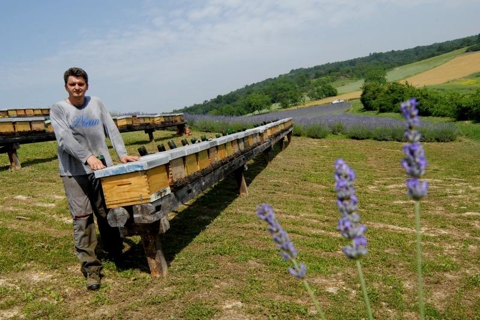
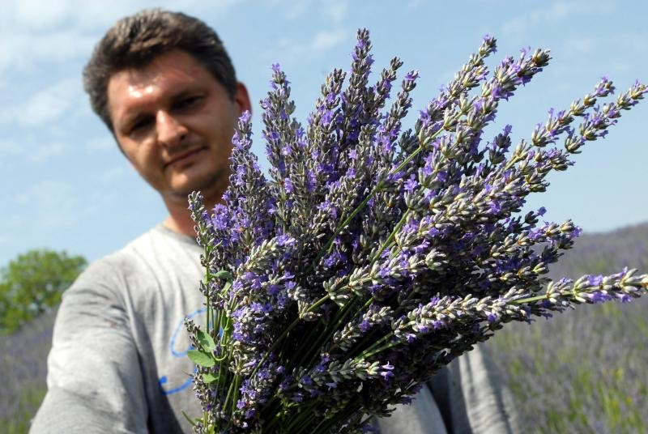
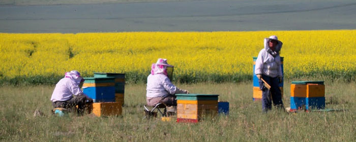
Pčele su nas oduvijek fascinirale svojim radom i onim što stvaraju.
Nakon kratkog upoznavanja s tehnologijom pčelarenja kupili smo prve košnice 2006. godine, a ubrzo nakon toga i kamion za seljenje pčela. Ustrajnim radom i stalnim učenjem širili smo pčelinjak i opremu.
Godine 2008. kupili smo zemljište u selu Glogovica na obroncima Dilj gore. Ondje je naš stacionarni pčelinjak, a posadili smo i više od 12 000 sadnica lavande, koja je pčelama izvor hrane, a nama nova proizvodnja. Danas uz med radimo i balzame, meleme i masti od pčelinjih proizvoda i ljekovitog bilja.
„Cilj nam je bio objediniti hortikulturu i pčelarstvo kako bi konačni proizvod bio što kvalitetniji za naše krajnje korisnike, a u potpunosti prirodan.”Obitelj Vrljić
Svaka sorta ima svoju boju, miris i okus. Prijeđite mišem ili prstom preko sorte i pogledajte boju u staklenci.
Cvjetni med
Najsvjetliji i najblaži. Ima više fruktoze nego glukoze, pa može i do dvije godine ostati tekuć.
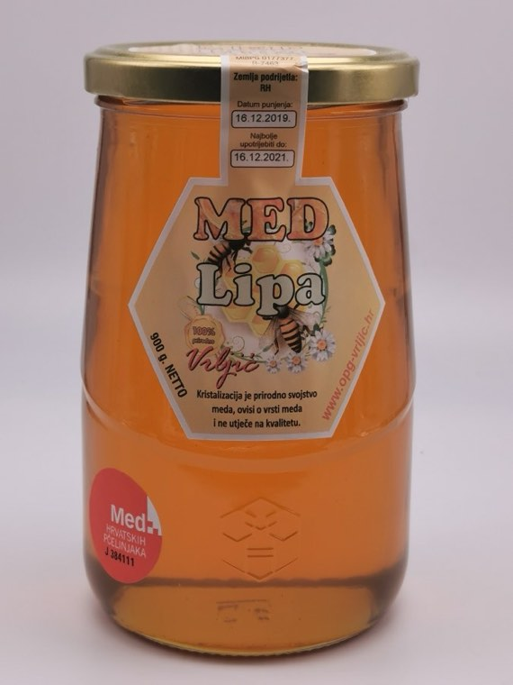
Med od lipe, u staklenci od 900 g.
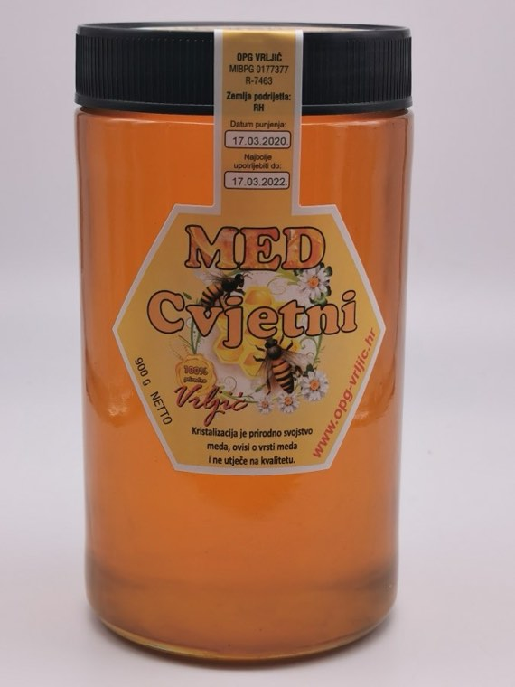
Od raznog livadnog cvijeća, blagog i aromatičnog okusa. Med za svaki dan.
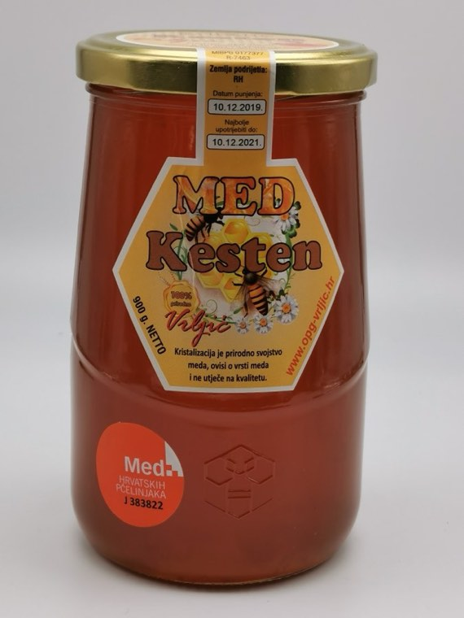
Tamne crveno-smeđe boje, blagog i pomalo gorkog okusa, s mirisom kestena.

Hrastova medljika, šumski med. Ovisno o godini gotovo crna, jače arome i intenzivnijeg mirisa.
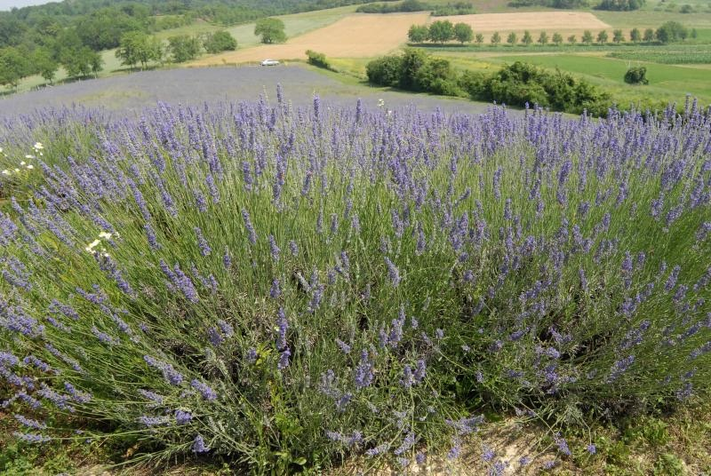
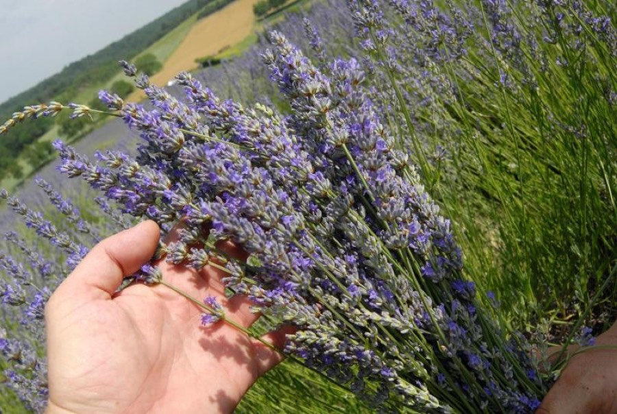
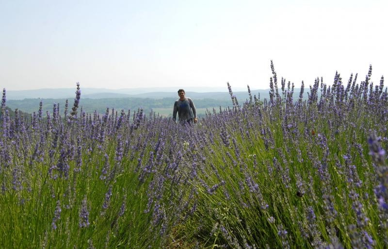
Više od 12 000 sadnica lavande okružuje naš stacionarni pčelinjak. Lavanda je pčelama izvor hrane, a od njezina cvijeta radimo ulje, hidrolat i mirisne vrećice.


Uz med radimo medne mješavine, propolis kapi i sprej, cvjetni prah, matičnu mliječ te masti i meleme na bazi pčelinjeg voska.
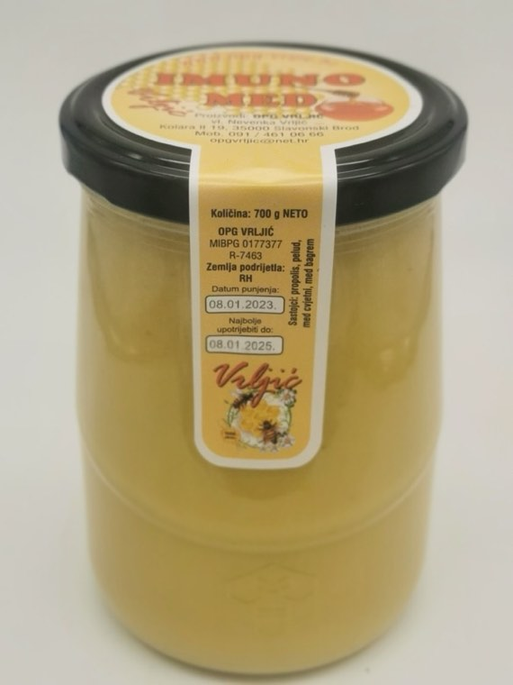
Mješavina tri vrste meda, propolisa i cvjetnog praha (peluda).
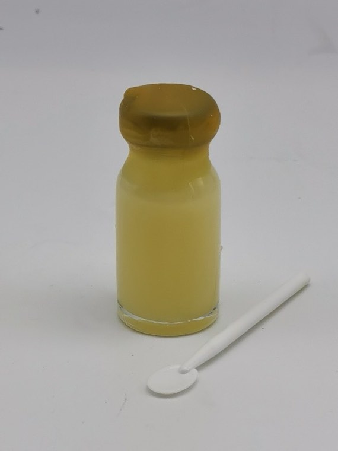
Svježa matična mliječ u bočici od 10 g.
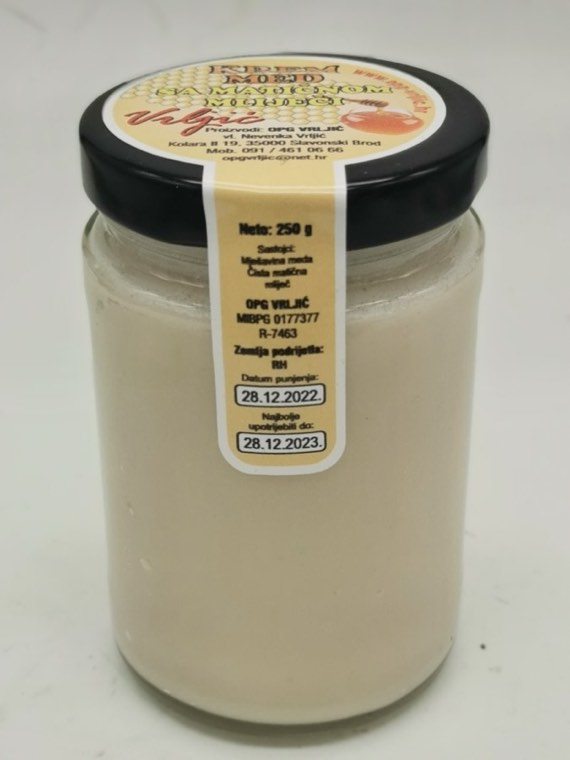
Kremasti med obogaćen matičnom mliječi.

Propolis u kapima, bočica s kapaljkom.
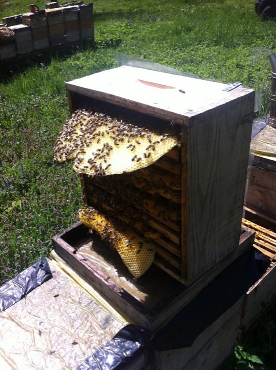
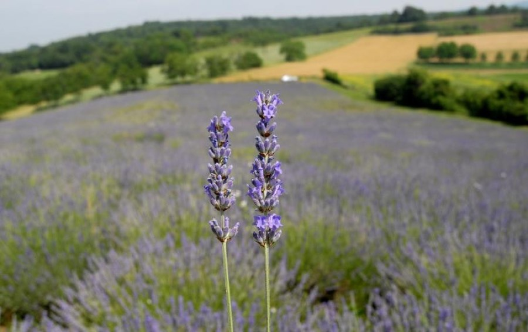
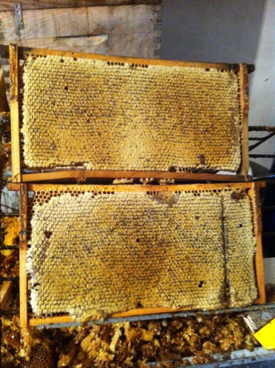
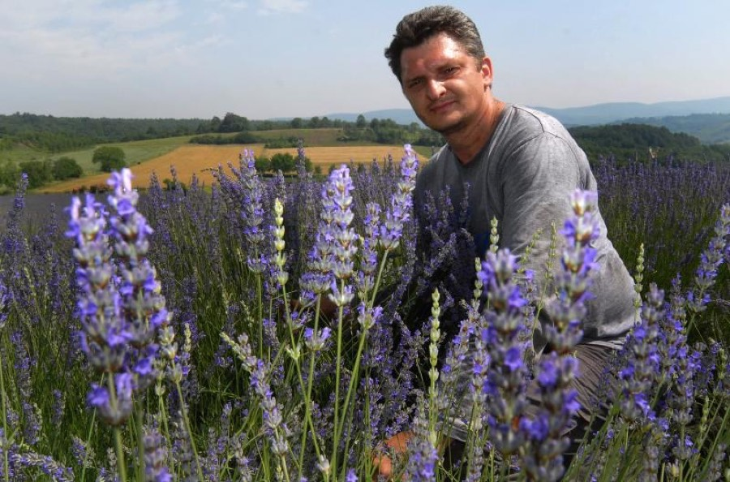
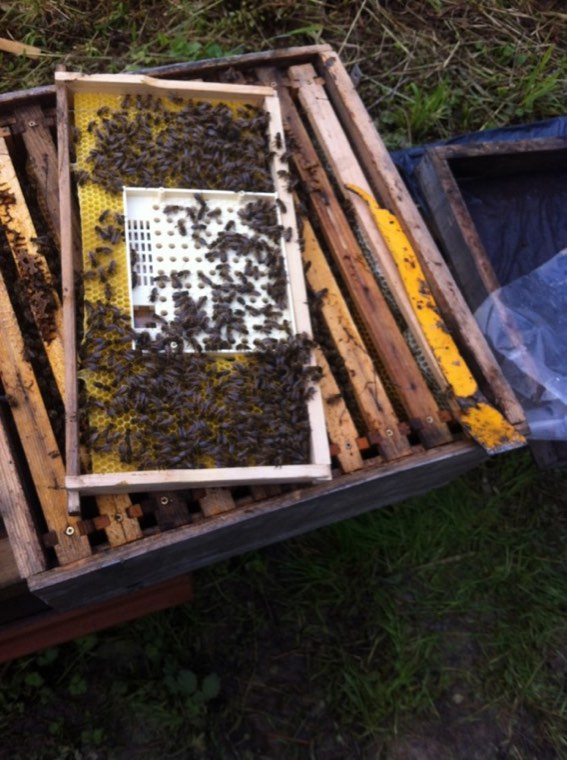
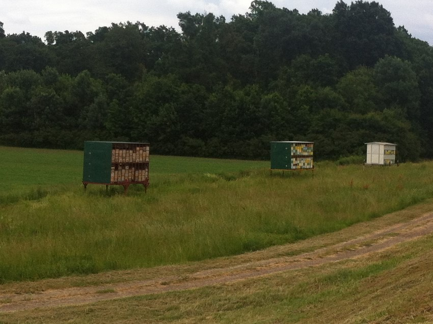
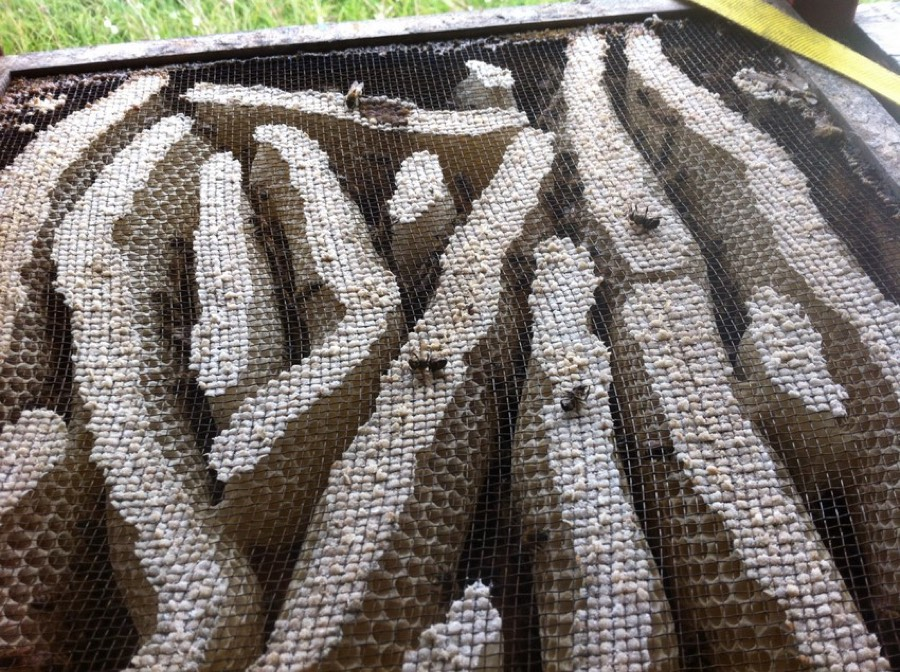
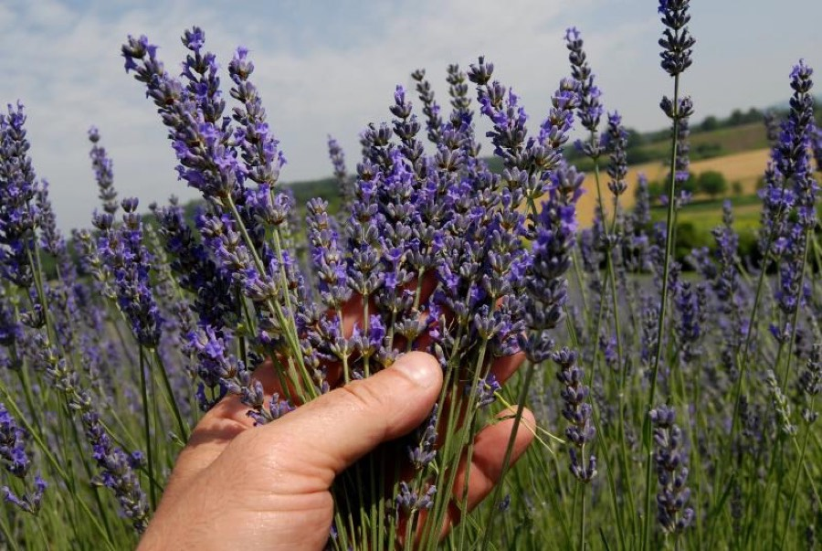
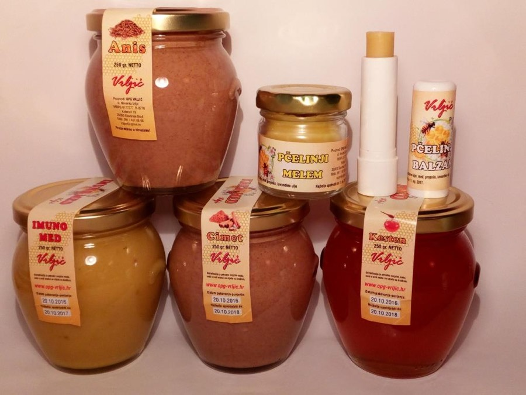
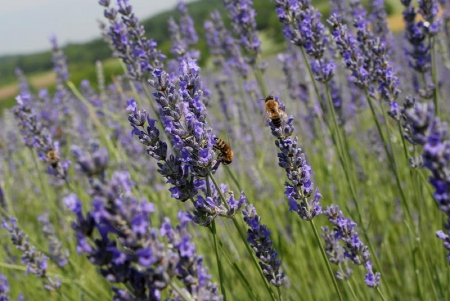
Pogledajte sve proizvode i cijene i dodajte ih u narudžbu jednim klikom.
Narudžbu pošaljite obrascem, e-mailom na opgvrljic@net.hr ili je dogovorite telefonom na 091 461 06 66.
Paket šaljemo GLS-om. Platite pouzećem pri preuzimanju ili uplatom na račun.
Odaberite proizvode na stranici Proizvodi i cijene i pošaljite narudžbu obrascem, e-mailom na opgvrljic@net.hr ili nas nazovite na 091 461 06 66.
Pouzećem, gotovinom dostavljaču pri preuzimanju paketa, ili uplatom na račun. Podatke za uplatu šaljemo e-mailom, a paket šaljemo nakon primitka uplate.
Pakete šaljemo dostavnom službom GLS diljem Hrvatske, u zemlje Europske unije, Srbiju te Bosnu i Hercegovinu. Troškove dostave plaća kupac, osim ako uz proizvod nije drugačije navedeno.
Paket predajemo dostavnoj službi u roku od 5 radnih dana. Dostava unutar Hrvatske traje do 8 radnih dana, a u EU, Srbiju te BiH do 15 radnih dana.
Bagremov med ima više fruktoze nego glukoze, pa može i do dvije godine ostati u tekućem stanju.
OPG Vrljić nije obveznik PDV-a (čl. 22 Zakona o PDV-u), pa je navedena cijena konačna cijena proizvoda.
OPG Vrljić, obiteljsko poljoprivredno gospodarstvo. Pčelinjak i lavanda: Glogovica, obronci Dilj gore.